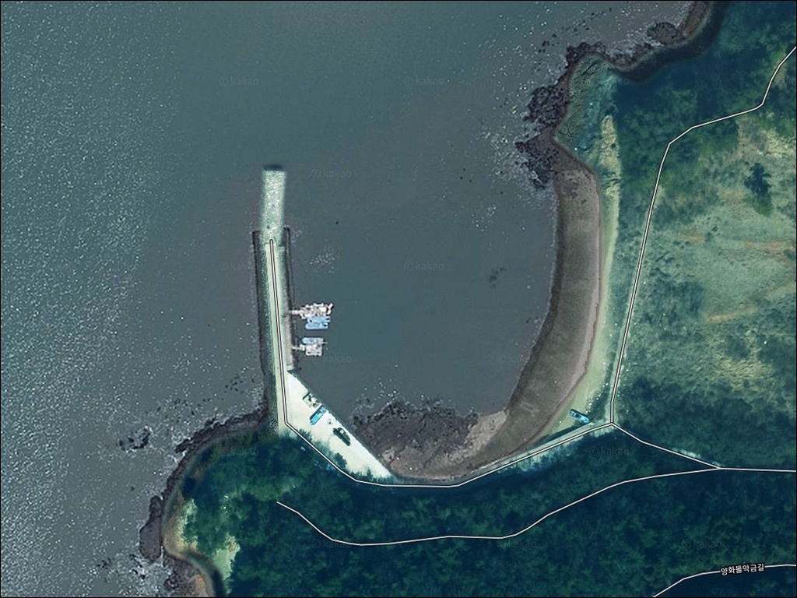
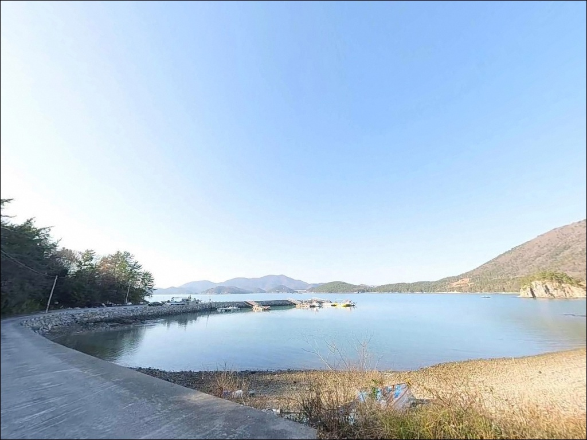
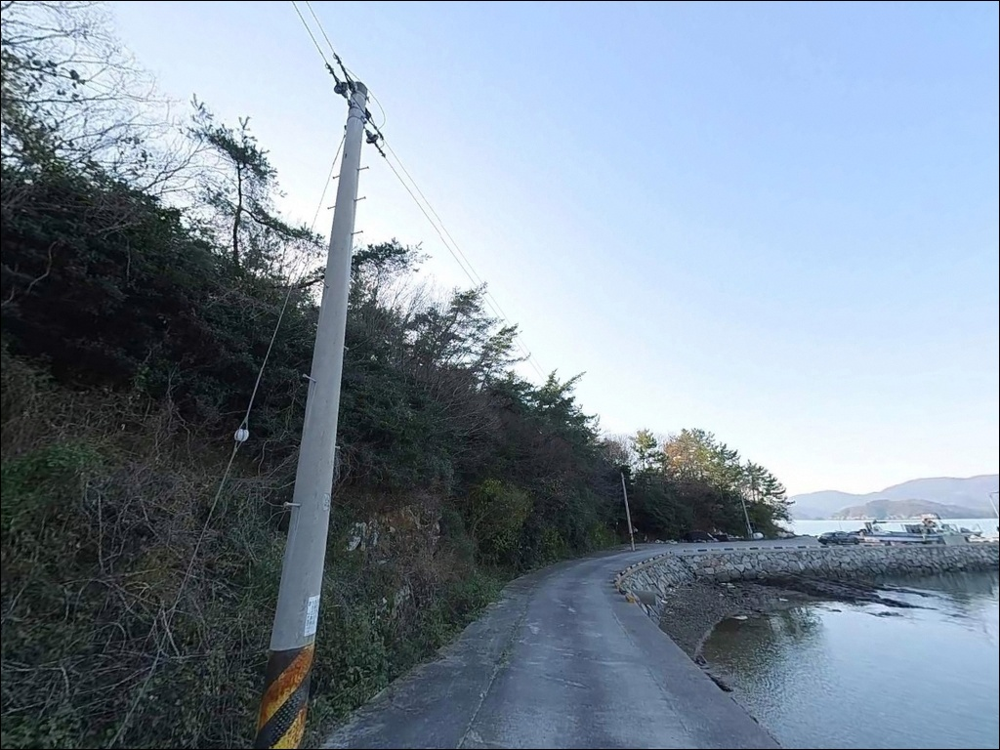
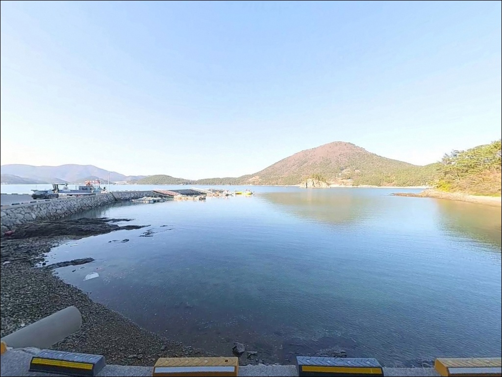
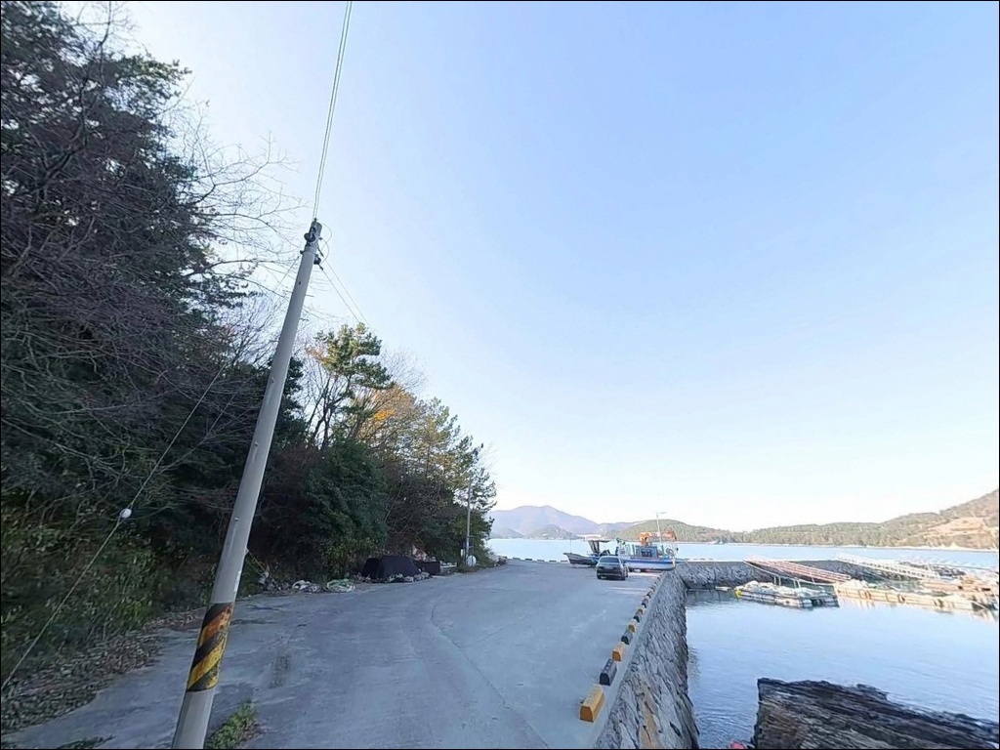
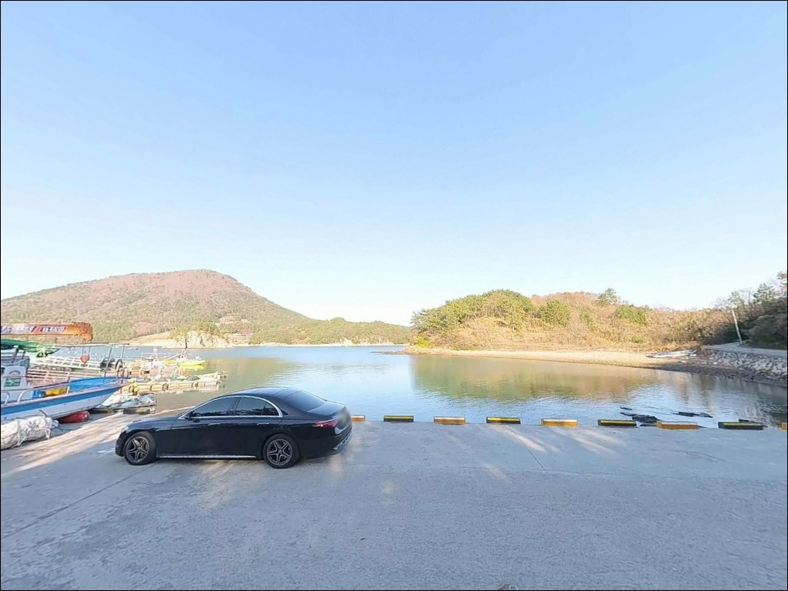
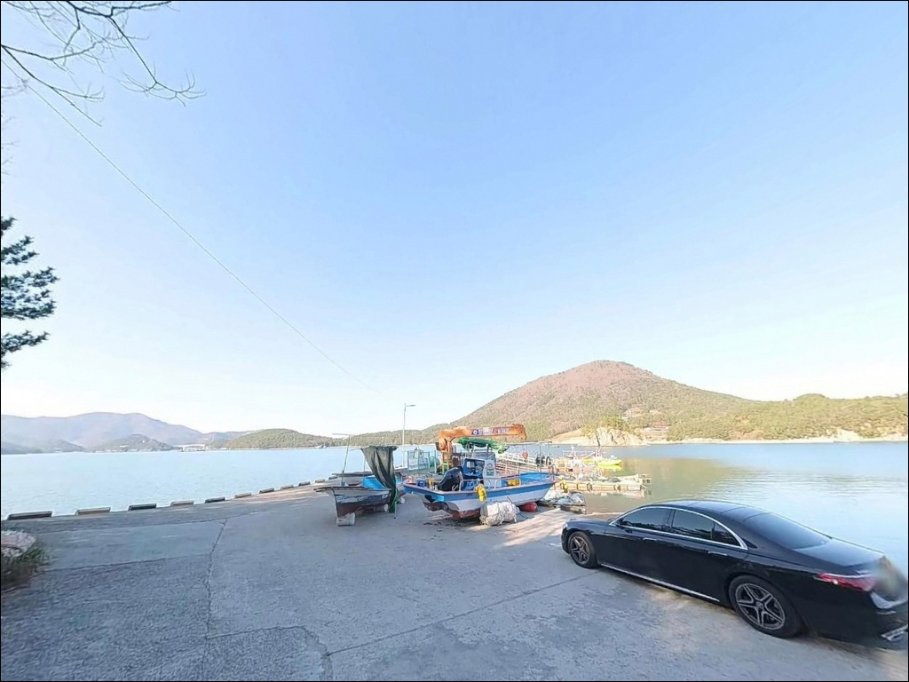
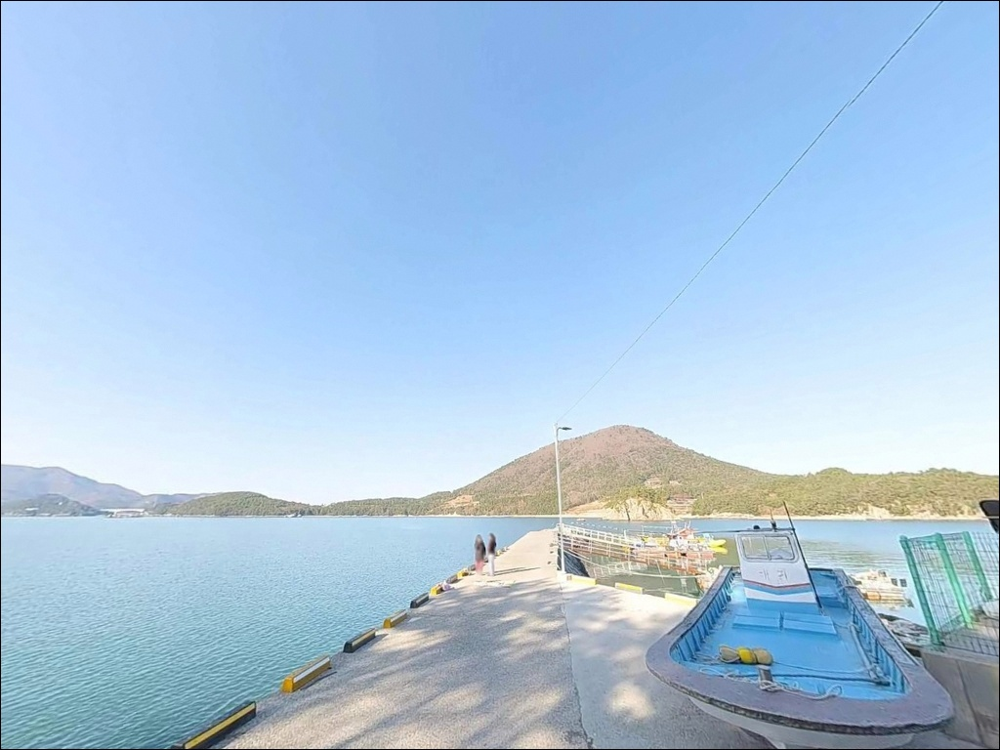
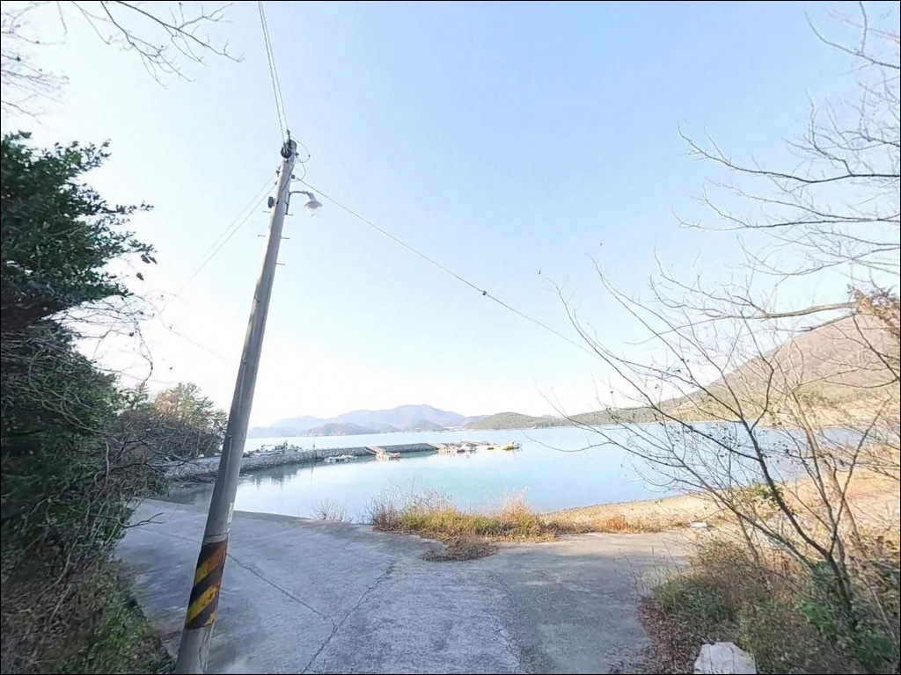

간조 시 수심 1m로 떨어지는 백양리방파제, 들물 타이밍에 노린 감성돔 찌낚시
이 페이지에는 광고(제휴 링크 포함)가 있으며, 광고 링크를 통해 구매하면 운영자가 판매 수익 또는 수수료를 받을 수 있습니다. 포인트 사진: 카카오맵 스카이뷰·로드뷰. 이 페이지의 지도·사진 이미지는 카카오맵의 실제 서비스 이미지와 다를 수 있습니다.


포인트 안내
백양리방파제 (백양선착장)
전남 고흥군 동일면 백양리 산 34-2
간조 시 수심이 1~2m 수준으로 급격히 낮아지는
이 포인트에서 물때 계산 없이 입장하면
낚시 자리 자체가 성립하지 않습니다.
백양리방파제는 내나로도와 외나로도 사이
물골 조류가 영향을 미치는 구조로,
들물 타이밍이 모든 판단의 기준이 되는
포인트입니다.
전남 고흥군 동일면 백양리,
내나로도 서측 해안에 자리한 백양선착장은
일자형 콘크리트 선착장 형태로
방파제 끝단 아래 수중 여(암반)가 잘 발달해 있습니다.
가을철 감성돔 찌낚시 포인트로 알려진 이곳은
조류가 흐를 때 어종 활성도가
확연히 달라지는 특성을 가집니다.
이 글은 백양리방파제의
진입 동선, 차박 여건, 물때 판단 기준,
낚시 스타일별 공략 조건에 집중합니다.
조황 단정이나 특정 어종 보장은
이 글의 범위에 포함되지 않습니다.

1. 진입 동선과 포인트 접근성
내나로도는 나로1대교를 통해 고흥반도와 연결되어
차량 진입 자체는 어렵지 않습니다.
동일면 소재지에서 해안도로를 따라
백양리 방면으로 이동하면
마을 안쪽을 통과하는 구간이 나옵니다.
이 구간에서 서행이 필요하며,
도로 폭이 좁아지는 구간이 포함됩니다.
대형 SUV나 캠핑 트레일러를 갖춘 차량이라면
출발 전 위성지도로 진입로를
미리 확인하는 편이 안전합니다.
선착장 끝단에서 회차가 가능하지만
공간이 좁아,
입구 공터에서 미리 방향을 돌려
진입하는 방식을 권장합니다.
주차는 선착장 입구 콘크리트 공터를
활용하는 방식이 일반적입니다.
5~6대 수준의 공간이며,
어업 활동에 방해가 되지 않도록
바짝 붙여 주차하는 것이 기본 매너입니다.
어선 이동 동선은 반드시 확보해 두어야 합니다.

2. 차박 환경과 야간 체류 여건
백양리는 민가가 드문드문 분포하는
소규모 어촌 마을 구조입니다.
야간에는 차량 통행이 거의 없어
프라이버시는 상대적으로 양호한 편이지만,
소음이 크게 울리는 환경이라
스텔스 차박 매너가 요구됩니다.
선착장에 보안등이 설치되어 있어
기본적인 시야 확보는 가능합니다.
다만 낚시 활동을 위해서는
개별 헤드랜턴과 서치라이트가 필요하며,
방파제 끝단까지 조명이 충분히
이어지지 않을 수 있습니다.
물골 조류 영향을 받는 지형 특성상
기상에 따라 바람이 강해지는 경우가 있습니다.
낚시를 마친 뒤 조용히 하룻밤 머무는 용도로는
나쁘지 않으나,
주차 공간이 넉넉하지 않아
차박을 메인으로 삼을 때는
공간 확보 여부를 사전에 점검해야 합니다.


3. 주변 편의시설 및 인프라 현황
백양리방파제 바로 앞에는
화장실이 없습니다.
동일면 소재지 내 공공시설을
미리 이용해두는 방식이 현실적입니다.
편의점과 작은 마트는
차량으로 약 10분 거리에 위치합니다.
동일면 소재지까지의 접근성은
비교적 짧은 편이라
식수·얼음·낚시 소품처럼
부족한 항목이 생긴다면
면 소재지를 기점으로
이동하는 것이 효율적입니다.
응급 상황 발생 시에는
동일면 보건지소와
나로도 내 약국을 이용할 수 있습니다.
연료·비상약품·식수는
출발 전에 완비해 두는 것이 기본입니다.

4. 낚시 자리가 사라지기 전에 확인해야 할 준비사항
백양리방파제 방문 전에
가장 먼저 확인할 것은 물때입니다.
내나로도와 외나로도 사이 물골의 영향으로
이 포인트는 조류 흐름이 선명한 편입니다.
간조 시 수심이 급격히 낮아지므로
들물 진입 타이밍을 기준으로
출발 시각을 역산하는 것이 핵심입니다.
바다타임에서 동일면 기준 물때를
확인한 뒤 계획을 세우는 것이 좋습니다.
사리 전후에는 조류가 빠르게 흘러
채비 컨트롤이 어려워질 수 있습니다.
조금 전후 또는 만조 전후 타이밍에
입장하는 것이 안정적인 공략 방식입니다.
방파제 끝단에는 안전 난간이 없으므로
야간 이동 시 발밑을 각별히 주의해야 합니다.
마을 어선이 오가는 공간이라
그물이나 어구 위에 채비를 놓지 않으며,
새벽 조업 차량 진입로를
반드시 확보해 두어야 합니다.
구명조끼 착용과 쓰레기 수거는
이 포인트에서도 기본 원칙입니다.

5. 지형 기반 낚시 여건 분석
백양리방파제의 핵심은
일자형 콘크리트 선착장 끝단 아래
발달한 수중 여(암반)입니다.
이 수중 여가 물고기들의 은신처 역할을 하며,
방파제 정면 20~30m 지점에는
수중 턱이 형성되어 있어
바닥 지형 변화가 뚜렷한 구간입니다.
바닥은 사니질(모래·뻘) 베이스에
군데군데 굴 껍데기와 여가 섞인 구조입니다.
중들물 기준 끝단 수심은 5~7m 내외이며,
조류가 살아날 때
어종 활성도가 확연히 달라지는
패턴이 나타나는 편입니다.
내나로도~외나로도 사이 물골 조류의 영향으로
흐름이 비교적 선명하게 형성됩니다.
다만 간조 시 수위가 급격히 낮아지므로
조류가 살아 있는 들물 구간에
타이밍을 맞춰 집중하는 방식이
이 포인트 공략의 기본 전제입니다.
출조 전 고흥 동일면 일대 최신 조황은
꼭 검색해 보시기 바랍니다.


6. 포인트에 어울리는 낚시 스타일
이 포인트에서 가장 잘 맞는 방식은
찌낚시입니다.
수중 여 주변을 조류 방향으로 흘리는
구멍찌 채비 운용이 이 지형에 유리하며,
가을철 감성돔 포인트로 알려진 구간이라
들물 타이밍에 집중하는 접근이 맞습니다.
루어낚시도 이 포인트 구조에 맞는 방식입니다.
방파제 끝단에서 장타를 치면
농어와 광어·양태 계열 반응이 기대되고,
야간에는 볼락 라이트게임을
선착장 주변 암반 경계선 중심으로
소형 지그헤드 채비로 천천히 탐색하는
방식이 잘 맞습니다.
원투낚시도 운용이 가능합니다.
바닥 밑걸림이 적은
방파제 정면 방향으로 채비를 보내면
도다리·붕장어·보리멸 계열 대상어를
기대해 볼 수 있는 구조입니다.
정조 타이밍에 채비를 멀리 보내
수중 턱 구간을 탐색하는 방식이 유효합니다.

7. 대안 포인트와 플랜 B 동선
백양리방파제 물때가 맞지 않거나
주차 여건이 여의치 않을 경우,
덕흥리 선착장이 첫 번째 대안입니다.
동일면 내에서 가까운 거리에 위치하며,
수심이 더 깊어 간조 시에도
낚시 진입이 상대적으로 유리한 편입니다.
내나로도에서 나로2대교를 건너
외나로도 방면으로 이동하면
나로도항(축정항)이 있습니다.
수심 10m 내외로 일정하고
진입과 주차 여건이 안정적이라,
백양리방파제를 처음 찾는다면
나로도항을 기점으로 삼는 동선이 효율적입니다.
차박 편의시설이 필요한 상황이라면
나로도 우주해수욕장 주차장 방면이
훨씬 쾌적한 대안입니다.
거리는 나로대교를 건너 이동해야 하지만
화장실 등 기본 편의 조건이
갖춰진 구간입니다.

들물 타이밍을 알고 가면
백양리방파제는 달라 보입니다
가을철 감성돔 찌낚시나
야간 볼락 라이트게임을 즐기는 낚시인이라면
백양리방파제의 지형 조건은
잘 맞는 구조입니다.
수중 여가 발달한 끝단과
물골 조류가 만드는 흐름은
복합 낚시 방식을 운용하기에
충분한 조건을 갖추고 있습니다.
반면 간조 시 수심이 급격히 낮아지는
이 포인트의 특성을 모르고
물때 계산 없이 찾아가면
낚시 자체가 성립하지 않는 상황을
맞닥뜨릴 수 있습니다.
물때 확인, 진입로 점검, 자급 준비,
이 세 가지를 갖추고 간다면
조용하고 집중도 높은 출조를
경험할 수 있는 포인트입니다.
화장실 없는 한적한 어촌 선착장에서
물골 조류 옆에 자리를 잡고
하룻밤 머무는 차박 낚시를 원하는 분이라면,
들물 타이밍과 주차 공간만
미리 확인해두면
낚시와 차박을 동시에 즐기기 좋은
출조가 될 수 있습니다.